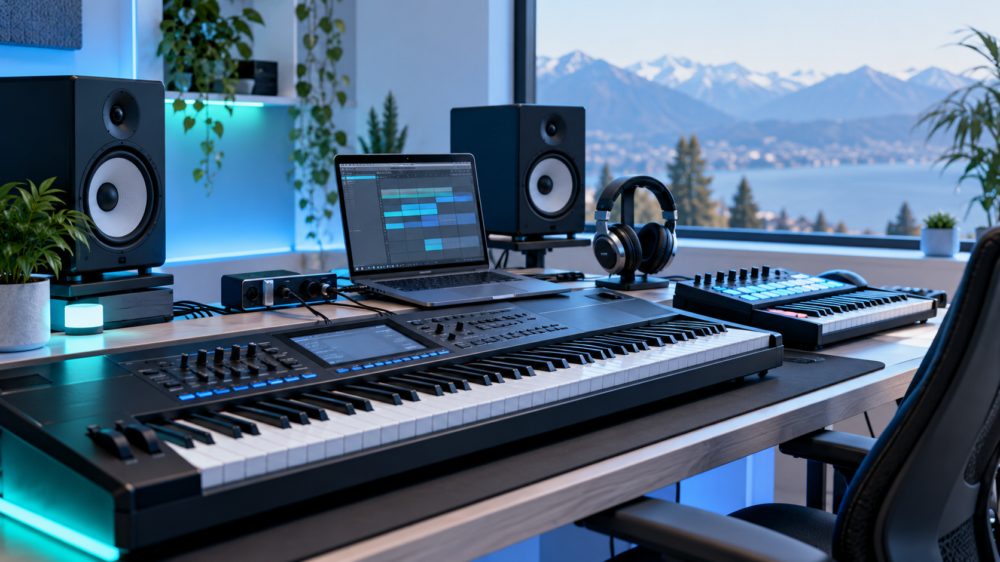
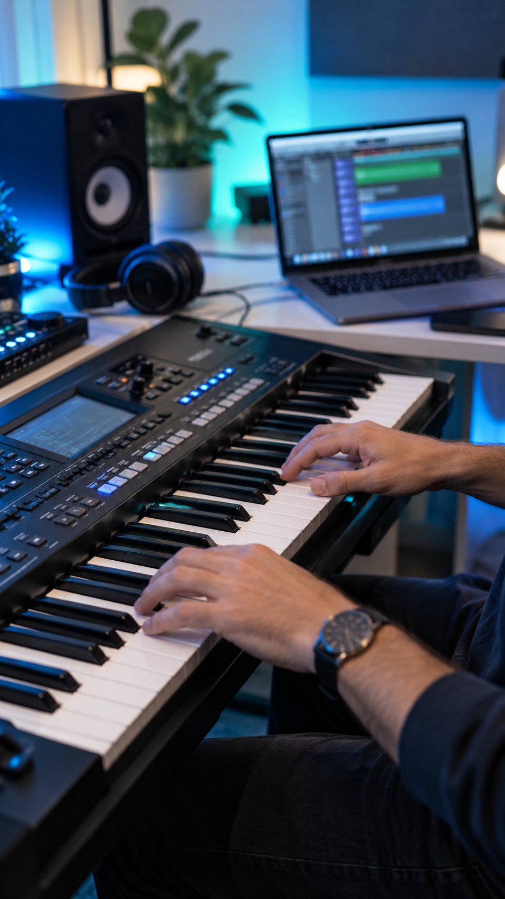
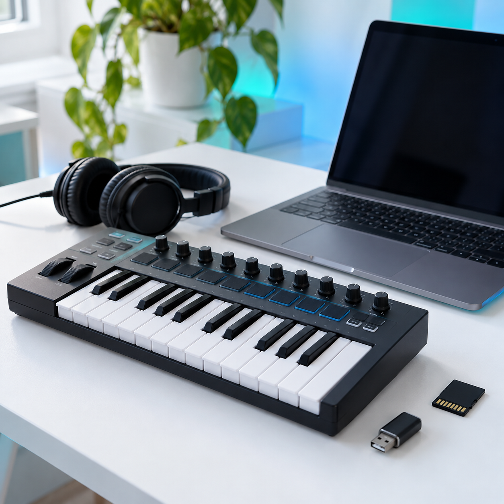
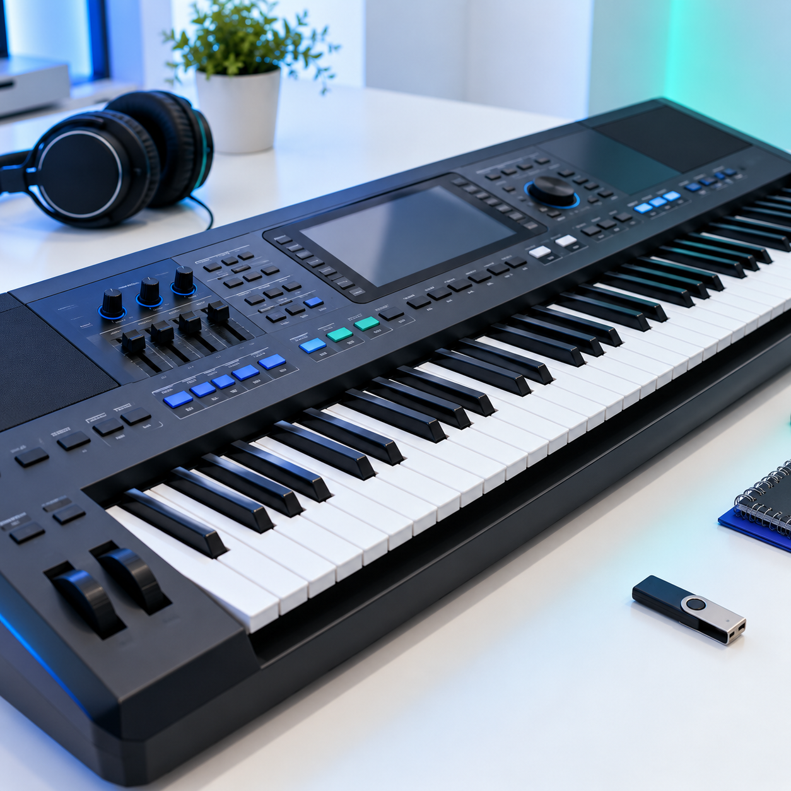
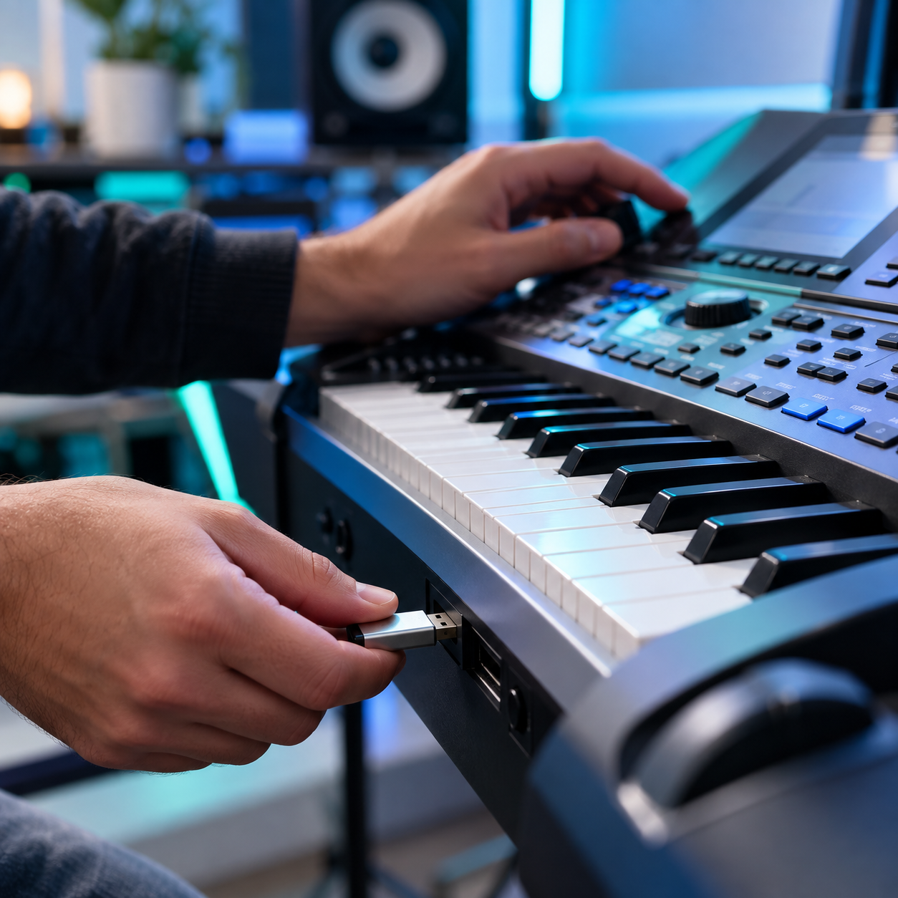
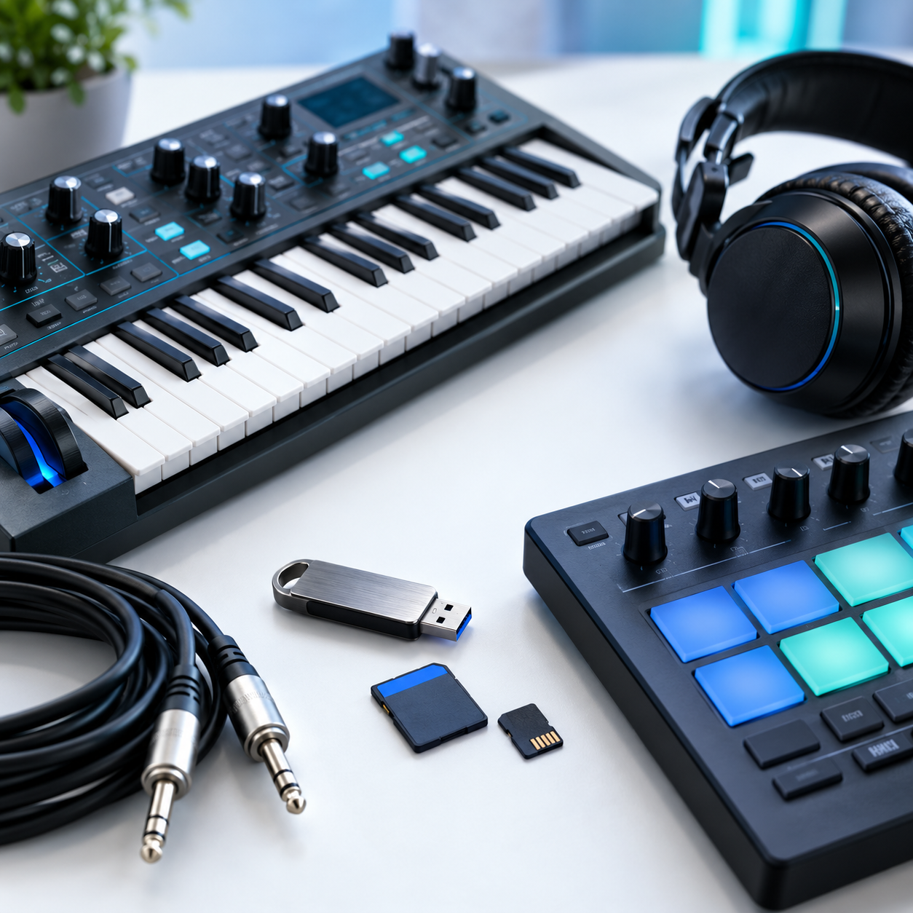

NICKY RITMOS ARGENTINA / DIGITAL SOUND
Ritmos y librerías para hacer sonar tu sintetizador
Estilos, sonidos y packs para Yamaha y Roland. Encontrá el indicado para tu equipo y consultanos antes de comprar.

CATÁLOGO DIGITAL
Todos los sonidos
Filtrá por tipo de pack o buscá el nombre de tu instrumento.
Cargando catálogo...
No encontramos ese sonido
Probá otro término o volvé a ver todos los packs.
ELEGÍ TU CAMINO
¿Qué buscás para tocar?
Explorá por tipo de contenido y verificá para qué instrumento está preparado cada pack.

HECHO PARA TOCAR
Encontrá el sonido que buscás para tu equipo
Desde estilos para acompañar una canción hasta librerías de pianos, trompetas y acordeones: explorá el contenido según tu instrumento.
SELECCIÓN DE LA TIENDA
Empezá por acá
Cargando packs...
ANTES DE SUMAR UN SONIDO
Elegí con tu instrumento en mente
Cada producto indica los equipos con los que está pensado para funcionar. Si tenés dudas, escribinos el modelo exacto de tu sintetizador.
Consultar compatibilidad ↗
NUEVAS POSIBILIDADES
Sonidos para tu forma de tocar
Explorá estilos y librerías para sumar opciones a tu instrumento.



PREGUNTAS FRECUENTES
Antes de elegir tu pack
¿Cómo sé si un pack sirve para mi sintetizador?
En cada ficha vas a encontrar los modelos indicados. Si tu equipo no figura o tenés dudas sobre la versión, consultanos antes de comprar.
¿Los productos son digitales?
Sí, el catálogo muestra librerías, estilos y otros contenidos digitales para instrumentos. Consultanos las condiciones de entrega del pack que te interesa.
¿Puedo pedir ayuda para elegir?
Claro. Mandanos por WhatsApp el modelo de tu equipo y el sonido que buscás.
SIGUIENTE COMPÁS
Tu próximo sonido empieza acá
Contanos qué instrumento usás y qué tipo de ritmo o librería estás buscando.